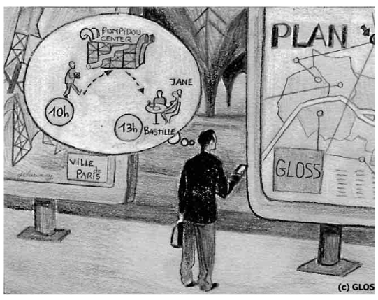
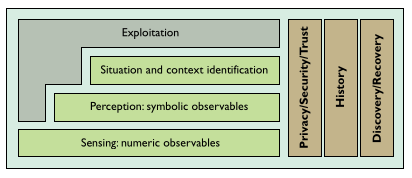

GLOSS
The GLOSS project was funded by the EU under its “Disappearing computer” initiative to look at ways of building an infrastructure for global smart interactive spaces. It was a consortium of universities:
- University of Strathclyde UK (lead)
- Université Joseph Fourier Grenoble FR
- UCD Dublin IE
- University of St Andrews UK
The project developed both the theory and practice of pervasive computing. For the former, we explored three “metaphors” of pervasive systems:
- Trails, capturing where a user went over the course of their interactions;
- Radar, allowing them to find things and people nearby; and
- Hearsay, letting them leave notes in space to be picked up later.
The first two are now commonplace in mobile computing; the third less so, which is interesting, as it let users annotate space as well as online resources, for example picking up notes left by others at connected displays.

It’s perhaps easier now than it was then to imagine how this might have played out if deployed at scale: probably not well.
We embodied these metaphors in prototype middleware that was then demonstrated using what was then the state of the art in mobile computing, the Compaq iPAQ, with sensors literally glued onto the back.

As with a lot of research projects it’s hard to tell exactly what impact this work had. It contributed to the science of pervasive computing, and trained up a significant number of PhD students and postdocs who later took up posts in academia and industry. Some of the ideas in modern mobile systems clearly share ideas from GLOSS, but whether there’s a causative chain is impossible to know.
Publications
Joëlle Coutaz, James Crowley, Simon Dobson, and David Garlan. Context Is Key. Communications of the ACM 48, pp.49–53. 2005.
Simon Dobson and Paddy Nixon. More Principled Design of Pervasive Computing Systems. In Human Computer Interaction and Interactive Systems. Rémi Bastide and Jörg Roth, editors. Vol.3425. Springer Verlag. 2004.